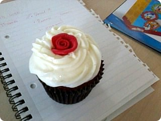

9월하고도 중순!!! 시간뭐이래 ;ㅂ;
8월달에 이미 약속이 줄줄이 잡혀서
9월달은 주말내내 밖에나갈일이 생겼다;;;
01. 이번주 토요일 아트디렉이믄서 바로 내 윗상사(?)담당(???)
V씨의 결혼식. 38살에 이제껏 "난 내아파트가 넘좋고
주말에 혼자 요리해서 먹구 DVD보구 뒹구는게 넘좋아~"
였던 그녀는 남자친구가 청혼한날 승질부터 냈다고 ㅋㅋㅋㅋㅋㅋㅋ
잘살고 있는데 아~왜!!! 이러믄서 ㅋㅋㅋㅋ
그러다가 why not? 이란 생각에 결혼결정!!
내가 인턴할때즈음(이게4월)부터 결혼결정을 내리고
조금씩 준비를해왔는데 드디어 D-day가 다가온거지
덕분에 V는 이번주 대대패닉
할일도 많고 준비할것도 많구 ㅋㅋㅋ
신랑될 사람을 저번 보스웨딩때 만나봤는데
이분이 소위말하는 영쿡 upper class분이라구
V말에 따르믄 영쿡은 이 class가 아직도 꽤 확실하다구 하믄서
너나 나처럼 월급받으믄서 전문직종사자들을 여기서는
middle class 라고하구 대대로 좀 부유한 가문에
성(........)에서 살고 ㅡㅡ;;; 목장있구 말기르구 그런사람들을
upper class라고 해 - 라고 설명해줬다.
이게 뭐 전에도 어디서 들은적은 있는거라 그런가 싶었는데
주말에 남자친구랑 여행댕겨온 사진보여주는데
푸헉~ (신랑쪽)가족이 소유한 성에서 자고왔다고ㅋㅋㅋㅋㅋㅋ
그 사진을 본순간 내 감상은
"으악 진짜 성에서 사람이 사네 ㅋㅋㅋㅋㅋㅋ" 였음^^;;
왼편 2/3정도는 일반인에게 공개하구
나머지 1/3 젤 꼭대기층을 가족이 사용한다구
이름을 까묵었는데(;;;) 그 성 소유주가 세계에서 렘브란트 그림을
가장 많이 소유한 사람중 하나라고;;;
쿨럭;;; 렘브란트를 보러 미술관에 가는게 아니라 그게 죄다 집에있다고@_@
그리고 V가 지낸 방 사진을 보여줬는데
공주방도 그런 공주방이 없었음ㅋㅋㅋㅋㅋ
완전 좋아하믄서 이것봐~공주님 방이야~이러믄서
자랑하는데 넘 귀여우셨음 ㅋㅋㅋㅋㅋㅋㅋㅋㅋ
덕분에 난 여기가져와서 한번도 안입은
샤랄라원피스를 입을날이 생겼다 ㅋㅋㅋ
이야~~ 이거 가져올때만해도
이걸 언제입어?? 싶었는데 역시 세상일은 모르는거임^^;;
*위 사진은 결혼식때 사용할 컵케키 미리시식^^;;
저위에 크림 정말 끝장나게 달았음
오전에 저거 하나랑 차한잔 마셨는데
점심생각 싹 달아날정도로 달았다;;;;
+ 그리고 결혼식날이랑 Gary Numan 런던라이브
날짜 겹쳤다 ㅡㅡ;;
이날 원피스를 입고 gig용 깜장옷(...;;)을 따로 들고가야하나 고민
결혼식장 깜장손톱 괜찮나 고민;;;;;
02. 8월말에 생각지도 못한 외주가 하나들어왔다
처음 미팅할때 마감시한이 2주라
계획서보내구 cost적어 냈는데 - 이게 2주동안 퇴근후 2시간~3시간
작업하는것 치고는 페이가 괜찮아서
우히힛 2주 로동하구 뭘 지를까~ 꿈에부풀어있었음^^;;;
하지만 역시 일이라는게 다 내맘대로 되나......OTL
매번 알믄서도 격을때마다 좌절하는 이것!!
저쪽도 본사에서 피드백이라던가 자료를 받아야해서
늦어지고 늦어지다보니 아직까지 일이 끝나지않았다 ;ㅂ;
나야 작업시간보다 대기시간이 더 길어서 억울(?)한건 없는데
이게 항상대기모드라서 다른약속잡기가 애매하다;;;
퇴근후에도 로동하는 나능 진정한 로동자!!! ^^;;;
03. 그 와중에 벨기에가는 유로스타티켓을 음청 싸게구했다
다음주 주말 1박2일 가서 쪼코라던가쪼코라던가쪼코를 먹고올계획
사실 막연하게 빠르면 11월 늦어도 2월~3월 벨기에 놀러가야지~라고
생각하고있었는데 어떤분이 사정이 생겨 못간다구
티켓을 무지싼가격에 내놓으셔서
앞뒤안가리고 잽싸게 겟^^;;;;
희희희 담주 일주일은 요거기다리믄서 즐겁게 로동!!!